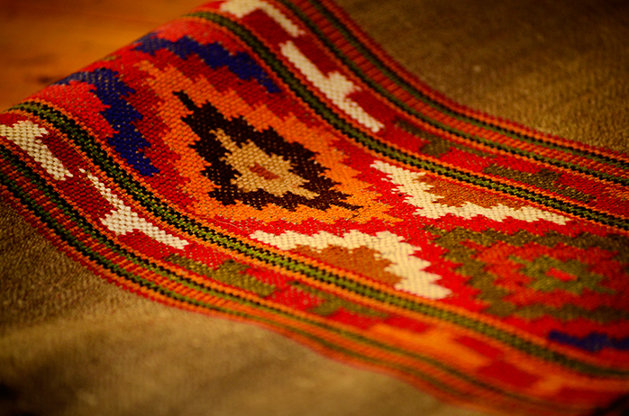
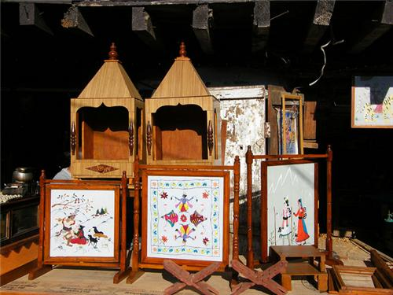
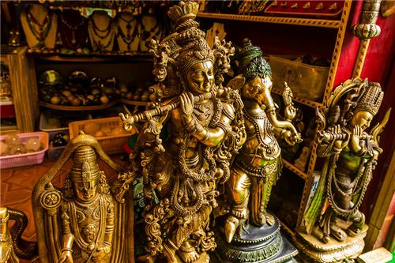

Crafts
Introduction
Among arts and crafts that come out of Himachal Pradesh state in India are carpets, leather works, shawls, metalware, woodwork and paintings. Pashmina shawl is the product which is highly in demand not only in Himachal but all over the country. Colourful Himachali caps are also famous art work of the people. One tribe, Dom, is expert in manufacturing bamboo items like boxes, sofas, chairs, baskets and racks. Metalware of the state include utensils, ritualistic vessels, idols, gold and silver jewelleries. Weaving, carving, painting, or chiselling is considered to be the part of the life of Himachalis. Himachal is well known for designing shawls, especially in Kullu. The architecture, objects, shops, museums, galleries and craftsmen charm with a variety perfected over time. Women take an active part in pottery and men in carpentry. For ages, wood has been used in Himachal in the construction of temples, homes, idols etc.Weaving

The extreme winters of Himachal necessitated wool weaving. Nearly every household in Himachal owns a pit-loom[citation needed] .Wool is considered as pure and is used as a ritual cloth. The well known woven object is the shawl, ranging from fine pashmina to the coarse desar. Kullu is famous for its shawls with striking patterns and vibrant colors.
Himachali caps are of typical styles and they differ region to region. In Kinnaur, shawls, saris and trousers are woven in wool. The shawls woven in Rampur, known as Rampur chaddar, are known for their soft texture and durability. In Chamba district, weaving assumes a chequered pattern. Besides shawls, carpets and blankets are also a vital part of the Himachali lifestyle.
Wood Craft

Himachal is the one of those areas in India where wood has played a significant role as a structural material. Pine, Cedrus deodara, walnut, horse chestnut and wild black mulberry are found in abundance in Himachal Pradesh. Places famous for woodcraft are Chamba, Tisza, Kalpa, Kinnaur district and Kullu. Village homes are constructed with carvings on doors, windows, balcony panels etc. This can be found in remote areas of the state, especially in the districts of Kinnaur and Kullu
Metal Craft

Objects crafted with metals fulfil the ritualistic needs of Himachalis. In 600 AD, the courts of the Himachali kings had mastered the craftsmen who were specialised in metalware. Antique metal statuettes are one of the most significant aspects in many temples of Himachal Pradesh. The statues of gods and goddesses also appear as mohras or in metal plaques.
In fact, metalcraft in the state grew around temples and palaces. Repousse technique was made in use to create the temple doors of Vajreshwari Devi, Jwalamukhi in Kangra, Bhimkali in Sarahan and Chandika Devi in Kinnaur district.
A canopy made of gold at the Jwalamukhi temple is one of the example of Himachal's metalwork which believed to have been gifted by Mughal emperor Akbar the Great. The metalwork of Kinnaur depicts a unique synthesis of Buddhism and Hinduism. Brass is often used for trending household utensils. Some of the towns where good metal work is found are Bilaspur, Chamba, Reckong Peo, Rohru, Sarahan and Jogindernagar.